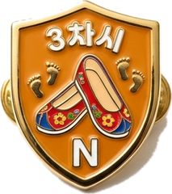
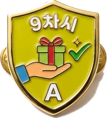

무.도.키즈는요
연구회
AI의 편리함 속에서 약해질 수 있는 공감, 협력, 비판적 판단 같은 사람 고유의 휴먼스킬에 주목한 초등 교사연구회입니다. 학생들이 AI를 무비판적으로 받아들이지 않고, 기술을 주체적이고 책임 있게 쓰도록 돕는 AI 융합 수업을 연구합니다.
연구 내용
초등 5~6학년 학생이 생성형 AI와 엔트리 AI를 직접 써 보며 AI의 쓸모와 한계를 탐색하는 10차시 프로그램입니다. AI의 오류와 감정적 한계를 따져 보고, 사람과 AI의 역할을 나눠 학교·공동체 문제를 기획하고, 공감·협력·윤리적 판단으로 ‘인간다운 도움’을 실천합니다.
어떤 문제에서 출발했나요?
“챗봇의 뻔하고 기계적인 위로에 더 큰 소외감과 외로움을 느꼈다.”
교실에서 들은 학생의 말
학생들은 AI에게 답과 위로를 쉽게 구하지만, 그 답이 틀리거나 자기 마음을 제대로 이해하지 못해도 왜 그런지 살펴보지 못한 채 받아들이고 있습니다.
학생이 생성형 AI와 직접 대화하고 그 답을 사람의 위로·자신의 판단과 비교해 보지 않으면, AI가 말은 만들어도 감정과 상황까지 이해하지는 못한다는 한계를 실제로 알기 어렵습니다.
AI의 답을 편리한 정답으로 받아들이던 학생이, 그 답이 사실인지·마음에 맞는지 스스로 살피고 AI가 놓친 부분에 자신의 공감과 판단을 더하는 학생으로 바뀝니다.
RUNNING MAN 10차시
나를 존중하는 데서 시작해 친구, 학교, 다른 나라 친구들까지 — 차시마다 머리글자 하나씩 모으며 달립니다.
 1차시 · Respect
서로 존중하기
사람과 AI를 대할 때 존중은 왜 필요할까?
주체성사회·관계적 사고
1차시 · Respect
서로 존중하기
사람과 AI를 대할 때 존중은 왜 필요할까?
주체성사회·관계적 사고
- AI를 함부로 대하는 장면, AI가 감정을 잘못 읽은 사례로 존중의 대상과 범위 생각하기
- 가치 카드로 나에게 중요한 가치를 고르고 짝과 우선순위 비교하기
- “AI를 대하는 태도는 사람 사이의 관계와 어떤 관련이 있을까?” 의견 나누기
- 존중받았던 경험을 나누고 모둠별로 ‘존중이란 ___ 하는 것이다’ 문장 만들기
 2차시 · Understand
인간과 AI 이해하기
AI는 무엇을 잘하고, 어떤 점을 확인해야 할까?
비판적 사고
2차시 · Understand
인간과 AI 이해하기
AI는 무엇을 잘하고, 어떤 점을 확인해야 할까?
비판적 사고
- AI 생성 그림 속 직업·가족의 모습에서 숨은 편견 찾기
- 역할 카드를 ‘AI가 잘하는 일 · 사람이 책임질 일 · 함께할 일’로 분류하기
- 편향을 줄이는 프롬프트로 고쳐 쓰고, 교사 시연으로 처음 결과와 비교하기
- “AI의 답을 믿기 전에 나는 ___을 확인하겠다” 문장 완성하기

3차시 · Notice
문제 알아차리기
「원숭이 꽃신」으로 편리함과 의존의 관계 살펴보기
문제해결 사고호기심
- 길찾기 앱만 따라가다 주변을 못 살핀 상황으로 이야기 열기
- 「원숭이 꽃신」을 읽고 꽃신이 준 편리함과 원숭이가 잃은 것 비교하기
- 오소리·원숭이·꽃신·발바닥을 AI 시대와 연결해 여러 해석 만들기
- “AI 시대에 내가 잃지 말아야 할 발바닥은 ___이다” 문장 완성하기
 4차시 · Need empathy
공감하기
상대의 마음에 닿는 위로는 어떤 모습일까?
직관적 통찰
4차시 · Need empathy
공감하기
상대의 마음에 닿는 위로는 어떤 모습일까?
직관적 통찰
- 같은 고민에 대한 위로 글 두 편에서 감정 인정·상황 이해·구체적 도움 등 공감 요소 찾기
- 고민 상황 카드로 해결책 제시·감정 인정·질문하기·말없이 곁에 있기 역할극
- 상황에 맞는 위로 문장을 만들어 학급 ‘위로 대사집’에 모으기
 5차시 · Interact
협력하기
사람과 AI, 그리고 다른 나라 친구들은 어떻게 협력할 수 있을까?
창의적 사고사회·관계적 사고
5차시 · Interact
협력하기
사람과 AI, 그리고 다른 나라 친구들은 어떻게 협력할 수 있을까?
창의적 사고사회·관계적 사고
- 태국 Prasarnmit 초등학교 친구들과 나누고 싶은 마음 정하기
- 공동 춤 뮤직비디오와 씨앗 그림·편지 초안 구상하기
- AI가 도울 일(아이디어 제안)과 우리가 직접 정할 일(의미·최종 표현) 나누기
- 국제교류 예절과 개인정보 보호 방법 확인하기
 6차시 · Network
공동체 연결하기
춤과 음악은 어떻게 우리를 연결할까?
윤리적 사고성찰적 사고
6차시 · Network
공동체 연결하기
춤과 음악은 어떻게 우리를 연결할까?
윤리적 사고성찰적 사고
- 한국과 태국의 춤·음악에서 공통점과 차이점 찾기
- 공동 뮤직비디오에 담을 메시지와 각자의 역할 정하기
- AI 번역을 쓸 때 다시 확인하기·개인정보 넣지 않기 등 지킬 점 정하기
 7차시 · Grow together
함께 성장하기
함께 만든 결과물에는 어떤 배움이 담겨 있을까?
성찰적 사고통합적 사고
7차시 · Grow together
함께 성장하기
함께 만든 결과물에는 어떤 배움이 담겨 있을까?
성찰적 사고통합적 사고
- 한국·태국 학생이 함께 공동 뮤직비디오 만들기
- Zoom 실시간 번역과 춤·표정으로 한 소통의 장점과 한계 비교하기
- 친구의 기여를 구체적인 행동으로 적어 전하고 배운 점 나누기
8차시 · Mission 실천하기 그림과 편지로 서로의 마음을 어떻게 전할 수 있을까? 직관적 통찰문제해결 사고
- 한지에 붓으로 감정을 표현해 꿈과 바람을 담은 씨앗 그림 만들기
- AI는 아이디어 탐색에만 쓰고, 그림과 편지는 직접 고르고 다듬어 완성하기
- 태국어 인사·응원 표현을 넣은 손편지 쓰기
- AI 그림과 내 그림을 감정 전달·정성·개성의 눈으로 비교하기

9차시 · Action
행하기
교류에서 나눈 마음을 어떤 행동으로 이어갈 수 있을까?
주체성윤리적 사고
- 태국 친구에게 받은 그림·편지에서 새로 알게 된 점 나누기
- 도움받을 사람의 뜻을 먼저 묻고 교실 속 공동체 도움 활동 계획·실천하기
- 책임 있는 AI 활용을 위한 학급 약속 만들어 게시하기
 10차시 · New Future
미래 만들기
AI 시대에 나는 어떤 사람으로 살아가고 싶은가?
성찰적 사고적응성
10차시 · New Future
미래 만들기
AI 시대에 나는 어떤 사람으로 살아가고 싶은가?
성찰적 사고적응성
- 프로젝트 결과물을 다시 보며 처음과 지금의 나 비교하기
- “AI 시대, 나는 어떤 인간으로 살아갈 것인가?” 미래 선언문 쓰기
- 선언문을 발표하고 친구의 변화와 강점을 구체적인 장면으로 격려하기
RUNNING MAN이 키우는 휴먼스킬
인간중심 사고는 “기술이 대신할 수 없는 인간만의 고유 능력으로 AI 활용에 있어 가장 중요한 사고 능력”이에요. 휴먼스킬은 세 갈래 12가지이고, RUNNING MAN은 그중 11가지를 10차시 동안 키워요.
휴먼스킬인간중심 사고
중심잡기
AI 시대의 변화에 휘둘리지 않고 스스로 중심을 잡고 성장하기 위한 토대 역량
성찰하기
융합하기
- 창의적 사고
문제 제기를 넘어 다른 부서의 데이터를 연결해 원인을 찾고 새로운 아이디어를 제시하고 실행 가능한 해결책 탐색
새로운 생각을 떠올리고 더 나은 방법을 설계하는 힘
- 직관적 통찰
상황을 꿰뚫는 능력
표정·분위기 같은 작은 신호에서 상대의 마음과 핵심을 알아차리는 힘
- 문제해결 사고
문제 제기를 넘어 다른 부서의 데이터를 연결해 원인을 찾고 새로운 아이디어를 제시하고 실행 가능한 해결책 탐색
필요한 것을 찾아 알맞은 방법으로 실천하며 문제를 푸는 힘
- 맥락적 사고
다양한 관점을 아우르는 능력
말과 상황 뒤에 숨은 뜻과 배경을 함께 읽는 힘
- 통합적 사고
다양한 관점을 아우르는 능력
여러 사람의 생각과 강점을 엮어 더 큰 답을 만드는 힘
휴먼스킬 출처: 김현철(고려대학교 컴퓨터학과 교수), 「인간중심사고 AI : 휴먼스킬」, 네이버커넥트재단 테크런.
10차시 휴먼스킬 길
나와 AI 이해하기 1~4차시
실천하고 미래 만들기 8~10차시
자랐는지 이렇게 확인해요
- 1차시 전사전 설문
수업하기에서 띄우고, 결과 CSV를 받아 둬요.
- 차시마다평가 초안
실시간 현황이 활동지 답을 상·중·하로 정리해요. 선생님이 확정해요.
- 10차시 뒤사후 설문 · 비교
사전 CSV를 불러와 휴먼스킬별 변화를 봐요.
차시별 알기 → 하기 → 가치
사회·관계적 사고
- 알기
상호 존중 — 나와 다른 존재의 생각·감정·가치를 인정하고 관계를 맺는 것
- 하기
서로 다른 가치관을 비교하고, 타인의 경험과 감정을 경청하며 존중의 의미를 설명하기
- 가치
사람과 AI를 포함한 다양한 존재를 함부로 대하지 않고 존중하려는 자세
주체성
- 알기
자기 이해 — 자신의 가치와 판단을 인식하고 책임 있게 선택하는 것
- 하기
존중의 대상과 범위에 관한 자신의 생각을 근거와 함께 표현하고, 다른 의견을 검토하기
- 가치
타인의 의견을 존중하면서도 자신의 판단을 주체적으로 형성하려는 자세
비판적 사고
- 알기
AI의 답변은 학습 데이터와 확률에 기반하므로, 사실과 다른 정보를 그럴듯하게 제시하거나 사회의 편견을 되풀이할 수 있음
- 하기
AI 답변을 신뢰할 만한 자료와 비교하여 사실 오류·누락·편향된 표현을 찾아 고치기
- 가치
AI의 결과를 정답으로 받아들이지 않고, 근거를 확인한 뒤 책임 있게 활용하려는 자세
비판적 사고
- 알기
문제를 해결하려면 겉으로 드러난 현상뿐 아니라, 그 안에서 어려움을 겪는 사람과 원인을 함께 살펴야 함
- 하기
이야기 속 인물과 사건을 AI 시대의 문제 상황과 연결하고, 원인과 영향을 근거를 들어 설명하기
- 가치
누군가의 어려움을 당연하게 여기지 않고 더 나은 해결 방법을 찾으려는 자세
맥락적 사고
- 알기
이야기 속 생략된 내용과 상징에는 더 깊이 생각해 볼 질문과 의미가 담길 수 있음
- 하기
인물·사물·사건에 대해 궁금한 점을 만들고, 글과 자신의 경험을 바탕으로 의미를 탐색하기
- 가치
처음 떠오른 해석에 머무르지 않고 "왜 그럴까?", "다른 방법은 없을까?"를 묻는 태도
직관적 통찰
- 알기
공감은 말로 드러난 내용뿐 아니라 표정·상황·관계·감정의 흐름을 함께 살펴 상대의 마음을 알아차리는 것
- 하기
AI와 사람이 제시한 위로의 차이를 비교하고, 상대의 감정과 상황에 알맞은 공감 표현을 골라 말이나 글로 나타내기
- 가치
정답처럼 보이는 조언보다 마음에 닿는 말의 가치를 알고, 타인의 어려움에 따뜻하게 반응하려는 자세
창의적 사고
- 알기
AI는 검색·분류·초안 작성 등에서 도움을 줄 수 있지만, 문제 해결의 방향과 의미는 사람이 창의적으로 설계해야 함
- 하기
AI와 사람이 맡을 역할을 나누고, 새로운 협력 아이디어를 구상하기
- 가치
AI를 정답 제공 도구가 아니라 더 나은 방법을 함께 만드는 협업 도구로 쓰려는 태도
사회·관계적 사고
- 알기
사람과 AI의 협력에는 편리함뿐 아니라 공정성·책임·관계에 대한 고려가 필요함
- 하기
AI가 도울 수 있는 일과 사람이 판단해야 할 일을 구분하고, 공동체에 미칠 영향을 설명하기
- 가치
AI 활용 과정에서도 사람의 존엄·관계·책임을 소중히 여기는 자세
윤리적 사고
- 알기
AI 사용은 개인의 편리함을 넘어 타인·공동체·지구촌에 영향을 줄 수 있음
- 하기
AI 사용 상황을 존중·공정성·다양성의 관점으로 판단하고 근거를 들어 설명하기
- 가치
AI를 쓸 때 나와 다른 사람의 권리와 입장을 존중하며 책임 있게 행동하려는 자세
성찰적 사고
- 알기
사람은 타인의 도움을 받으며 관계와 경험 속에서 성장하는 존재임
- 하기
나와 타인·학교·지역·지구촌의 연결을 돌아보고 자신의 AI 사용 태도를 성찰하기
- 가치
자신이 공동체에 미치는 영향을 생각하며 더 나은 관계를 위해 실천하려는 태도
성찰적 사고
- 알기
함께 성장하려면 자신의 배움과 협동 과정을 돌아보고 더 나아질 점을 찾아야 함
- 하기
협력 과정에서 자신의 역할·변화·부족했던 점을 돌아보고 실천 다짐으로 표현하기
- 가치
자신과 친구, 모둠의 성장을 소중히 여기며 더 나은 참여를 위해 노력하는 자세
통합적 사고
- 알기
좋은 아이디어는 여러 사람의 강점·의견·경험이 이어질 때 더 발전함
- 하기
강점과 피드백을 바탕으로 공동 작업을 보완하고, 배운 내용을 연결해 설명하기
- 가치
서로 다른 의견과 강점을 합쳐 공동 결과물을 더 좋게 만들려는 태도
직관적 통찰
- 알기
인간다운 도움은 말로 드러난 필요뿐 아니라 상대의 감정·문화·상황을 함께 살피는 데서 시작됨
- 하기
색·선·글·언어 표현으로 상대에게 전하고 싶은 감정과 응원을 표현하기
- 가치
다른 나라 친구의 마음과 문화를 존중하며 진심이 담긴 표현으로 관계를 맺으려는 태도
문제해결 사고
- 알기
도움을 실천하려면 상대에게 필요한 것을 파악하고 적절한 방법으로 마음을 전해야 함
- 하기
씨앗 그림과 편지를 구성하고, AI 표현과 사람의 직접 표현을 비교해 더 나은 전달 방법 찾기
- 가치
기술의 도움을 쓰되, 사람의 판단과 정성이 필요한 부분을 소중히 여기는 자세
주체성
- 알기
공동체를 돕는 실천은 상대의 필요를 살피고 내가 할 수 있는 일을 스스로 고르는 데서 시작됨
- 하기
도움 활동을 계획·실행하고, 자신의 역할과 실천 결과를 기록하기
- 가치
작은 일이라도 스스로 골라 실천하고 맡은 역할에 책임을 다하는 자세
윤리적 사고
- 알기
도움 활동과 AI 활용에서는 상대의 권리와 상황을 존중하고, 행동이 공동체에 미치는 영향을 생각해야 함
- 하기
상대의 의사와 개인정보를 존중하는 방법을 찾고, AI를 책임 있게 쓰기 위한 학급 약속을 만들기
- 가치
나의 편리함뿐 아니라 다른 사람에게 미칠 영향을 생각하며 약속을 지키려는 태도
성찰적 사고
- 알기
성장은 결과뿐 아니라 생각·태도·관계의 변화를 돌아보는 과정에서 확인할 수 있음
- 하기
활동 기록을 바탕으로 개인과 모둠이 성장한 점을 찾고, 배운 점·느낀 점·실천할 점을 정리하기
- 가치
자신과 친구의 노력과 변화를 소중히 여기고 배움을 일상에서 이어 가려는 자세
적응성
- 알기
AI 기술과 생활이 달라져도 사람을 존중하는 가치를 지키며 새로운 상황에 맞게 행동을 조정해야 함
- 하기
AI 시대에 지키고 싶은 가치와 실천 방법을 미래 선언문으로 표현하고, 상황이 달라질 때 방법을 보완하기
- 가치
새로운 기술과 다양한 의견을 열린 태도로 살피며 자신의 판단과 실천을 계속 점검하려는 태도
운영 안내
- 학교급
- 초등학교 5~6학년
- 운영 차시
- 10차시
- 학습 키워드
- 컴퓨팅 사고력 · 데이터와 네트워크 · AI 기술 · AI 윤리
성취기준 (도덕)
- [6도02-03] 인간과 인공지능 로봇 간의 다양한 관계를 파악하고 도덕에 기반을 둔 관계 형성의 필요성을 탐구한다.
- [6도03-04] 다른 나라 사람들이 처한 여러 가지 상황을 종합적으로 이해하고 해결 방안을 탐구하며 인류애를 기른다.
- [6도02-01] 봉사의 의미와 중요성을 이해하고, 타인이 처한 상황과 환경에 대한 주의 깊은 관심을 바탕으로 봉사를 실천한다.
지도할 때 중점
글로벌 확산
태국 학교와 온·오프라인으로 교류하며 휴먼스킬을 서로 실천하고 넓혀 갑니다.
현장 일반화
동학년 선생님이 바로 쓰도록 10차시 지도안과 자료를 묶어 5지구 거점교 컨퍼런스에서 나눕니다.
시간이 부족하다면
- AI 답변의 오류·편향 살피기
- 사람과 AI의 역할과 책임 나누기
- 공동체 문제 해결 아이디어를 실천하고 돌아보기
3단계 압축 운영안으로 핵심만 운영할 수 있습니다.
AI 도구 쓰기 전 체크리스트
오남용·악용
격차
미래역량
생각을 AI에 맡기지 않기
초등에서는 범용 생성형 AI의 연령 기준(대개 만 13세 이상) 때문에 교사 시연이나 교육용 도구로 운영하는 것이 안전합니다. 약관은 서비스·시점마다 바뀌니 수업 전에 꼭 다시 확인하세요.
따라 하기 체크리스트
연구회가 실제 수업에서 챙긴 것들이에요.
수업 사전
1차시 · 존중하기
2차시 · 인간과 AI 이해하기
3차시 · 문제 알아차리기
4차시 · 공감하기
5차시 · 협력하기
6차시 · 공동체 연결하기
7차시 · 함께 성장하기
8차시 · 실천하기
9차시 · 행하기
10차시 · 미래 만들기
수업 사후
수업하기 체크리스트
수업 전
수업 중
수업 후
휴먼스킬
수업 이야기
4개 학급에서 10차시를 실제로 운영하며 바꾼 점과 학생들의 변화예요.
1차 수업에서 바꾼 점
따라 하실 선생님을 위한 ‘함정 미리보기’예요.
- 1차시서로 존중하기
처음 걱정
‘AI도 존중받아야 할까?’ 토론이 AI를 사람과 같은 존재로 보는 논의에 머물면, 사람 사이의 관계와 존중 태도라는 수업 목표가 흐려질 수 있었음.
이렇게 바꿨어요AI를 대하는 태도가 사람 사이의 관계와 어떤 관련이 있는지 생각하도록 질문을 구체화하고, 가치 선택과 존중받은 경험 나누기를 통해 존중의 의미를 탐색하도록 구성함.
- 2차시인간과 AI 이해하기
처음 걱정
편향을 찾은 뒤 AI가 편향을 극복하도록 프롬프트를 고치는 활동은 좋지만, 초등학생이 AI를 직접 사용하기 어려울 수 있고 활동 시간이 부족할 우려가 있었음.
이렇게 바꿨어요프롬프트 힌트를 제공하고, 학생이 만든 프롬프트를 교사가 화면에서 시연해 수정 전·후 결과를 비교하도록 함. 직접 사용이 어려운 경우 교사 시연이나 인쇄 자료로 참여할 수 있게 함.
- 3차시문제 알아차리기
처음 걱정
「원숭이 꽃신」의 인물과 사물을 AI 세계에 일대일로 대응하면 상징 해석이 어렵고, AI를 나쁜 기술로만 이해할 우려가 있었음.
이렇게 바꿨어요길찾기 앱 사례로 편리함과 의존의 관계를 먼저 보여 주고, 하나의 정답 대신 여러 해석과 근거를 나누도록 함. 기술의 의도와 사용 결과를 구분하고, AI를 유익하게 활용하면서 사람이 맡아야 할 판단을 생각하도록 수정함.
- 4차시공감하기
처음 걱정
‘AI의 완벽한 조언과 사람의 서툰 손편지’, ‘로봇 역할과 인간 역할’을 대조하면 AI는 차갑고 사람은 공감적이라는 결론을 미리 정해둘 수 있었음.
이렇게 바꿨어요작성 주체가 아니라 감정 인정·상황 이해·도움의 적절성 등 위로 표현을 기준으로 비교하도록 함. 해결책 제시, 질문하기, 말없이 곁에 있기 등 여러 반응을 살펴 상황에 맞는 위로 문장을 만들도록 수정함.
- 5차시협력하기
처음 걱정
춤 뮤직비디오와 씨앗 그림·편지 활동을 한 차시에 모두 완성하려 하면 시간이 부족하고, 사람과 AI의 협력이라는 목표도 흐려질 수 있었음.
이렇게 바꿨어요두 활동을 완성하는 대신 각각의 목적과 전할 마음을 정하고 초안을 구상하도록 함. AI가 도울 부분과 학생이 직접 판단할 부분을 나누고, 구체적인 제작과 교류는 다음 차시로 이어지게 함.
- 6차시공동체 연결하기
처음 걱정
춤·음악을 통한 국제교류와 AI 사용, 관계망·공동체 영향 활동이 함께 제시되어 차시의 초점이 분산될 수 있었음. 문화 차이를 단순 비교하는 데 그칠 우려도 있었음.
이렇게 바꿨어요한·태 춤과 음악이 학생들을 연결하는 의미를 중심으로 구성함. 공동 뮤직비디오의 메시지와 역할을 구상하고, AI 번역은 번역 결과 확인과 개인정보 보호 등 교류를 돕는 도구로 다루도록 조정함.
실제 변화
“AI가 자신 있게 대답해도 그 말이 맞는지 확인하는 방법을 말할 수 있다” 4.14→4.58, “AI가 알려 준 답을 책이나 어른에게 한 번 더 확인하고 싶다” 3.72→4.48
“AI가 다정하게 말하는 것과 사람이 내 마음을 알아주는 것은 다르다는 것을 안다” 사전 4.52에서 사후 4.76
“AI가 써 준 글에 내가 배운 표현이나 직접 만든 그림을 더해 다시 만든다” 3.77→4.36, “AI가 써 준 글을 그대로 내기보다 내가 읽고 고쳐 쓴 글을 내고 싶다” 4.31→4.57
사전사후5점 만점 · 막대는 3점부터 · 많이 오른 순서 · 줄을 누르면 해석
비판적 사고 +0.69
가장 크게 올랐어요. AI 답을 다른 자료로 다시 확인하려는 태도(3.72→4.48)와 추천 영상이 나온 이유를 생각하는 습관(3.56→4.41)이 늘었어요. (그렇다 이상 63% → 88%)
통합적 사고 +0.52
8차시 씨앗 그림·손편지를 AI 아이디어에서 출발해 직접 고쳐 완성한 경험이 반영된 것으로 보여요. (그렇다 이상 68% → 86%)
직관적 통찰 +0.52
“직접 해 봐야 알 수 있는 것을 예로 들 수 있다”가 3.94→4.64. 춤·뮤직비디오·손편지처럼 몸과 손으로 해 본 활동의 영향이에요. (그렇다 이상 74% → 89%)
성찰적 사고 +0.50
매 차시 배움 정리와 10차시 성장 돌아보기가 습관으로 이어졌어요. (그렇다 이상 72% → 91%)
호기심 +0.47
AI 답을 읽고 새 질문을 만드는 힘은 크게 늘었지만, 생활 속 AI 기기를 살펴보는 것은 사후에도 낮은 편이라 수업 밖 연결이 더 필요해요. (그렇다 이상 68% → 84%)
창의적 사고 +0.46
“AI가 써 준 이야기에서 무엇을 바꾸면 내 이야기가 되는지 생각할 수 있다”가 가장 많이 올랐어요. (그렇다 이상 74% → 87%)
사회·관계적 사고 +0.40
태국 친구들과 함께 만든 경험이 협력하는 태도로 이어졌어요. (그렇다 이상 78% → 91%)
적응성 +0.39
생각대로 되지 않아 다시 하더라도 배우는 과정이라고 생각하게 됐어요(3.83→4.28). (그렇다 이상 81% → 91%)
문제해결 사고 +0.39
쉬운 것으로 바꾸기보다 AI 도움을 받아 원래 하고 싶던 것을 해 보려는 마음이 커졌어요(3.79→4.45). (그렇다 이상 76% → 90%)
윤리적 사고 +0.29
사전부터 가장 높았던 영역이에요. 사진을 AI에 올리기 전에 어른에게 묻는 태도가 가장 많이 올랐어요. (그렇다 이상 82% → 94%)
주체성 +0.24
상승 폭이 작은 편이에요. 편리함을 미루고 먼저 찾아보는 태도는 10차시만으로 바뀌기 어려웠어요. (그렇다 이상 79% → 85%)
맥락적 사고 +0.21
AI 추천·규칙을 우리 교실에 맞게 바꾸는 힘은 올랐고, 이미 높던 문항은 비슷했어요. (그렇다 이상 81% → 87%)
반별 보기
- 80_1+0.64
- 80_2+0.60
- 80_3+0.20
- 80_4+0.27
네 학급 모두 올랐지만 상승 폭은 80_1·80_2(+0.6점대)와 80_3·80_4(+0.2점대)로 갈렸어요. 학급마다 운영 시간이나 교류 활동 참여 방식이 달랐는지 ‘1차 수업에서 바꾼 점’과 함께 돌아볼 거리예요.
어떻게 쟀나요
- 대상
- 4개 학급(80_1~80_4) 학생
- 시기
- 사전 2026. 8. 28.~9. 2. / 사후 2026. 11. 10.~11. 16.
- 도구
- 휴먼스킬 12개 영역 × 3문항(지식·이해 / 과정·기능 / 가치·태도) = 36문항, 5점 척도
- 응답 수
- 사전 81명, 사후 83명
- 비교 방법
- 익명 응답이라 같은 학생끼리 짝짓지 않고 사전·사후 집단 평균을 비교
해석할 때 유의할 점
- 학생 자기보고 설문이고, 익명 응답이라 개인별 변화가 아닌 집단 평균을 비교했어요.
- 사전 평균이 이미 4점대로 높아, 원래 높던 문항은 더 오를 여지가 적었어요.
- 전체 평균 차이는 통계적으로 의미 있는 수준이에요(Mann-Whitney U 검정 p<.001, 효과크기 d=0.80). 12개 영역도 모두 p<.01 수준에서 차이가 나타났어요.
- 사전 설문에서 ‘설문 시점’을 잘못 고른 응답이 많아, 응답 날짜(8~9월=사전, 11월=사후)로 사전·사후를 나누었어요. 이 사이트의 사전·사후 설문은 시점을 선생님이 정하고 반·번호를 받아, 이런 오기입을 막고 학생별 변화도 볼 수 있어요.
학생 목소리
“ai의 조언을 들었을 때는 상투적이고 더 인간적인 외로움을 느꼈는데, 말도 통하지 않는 태국 친구와 교류할 때 언어적 한계를 뛰어넘기 위해 ai를 써서 ai를 도구로 나의 마음을 전하고 받으니 먼 나라에서도 나와 비슷한 고민을 가진 친구가 있음을 알았고, 말이 통하지 않지만 서로 번역한 언어 속에서 나눈 진심이 통하는 걸 느꼈다. 인간에게만 위로받을 수 있는 영역이 분명히 있음을 느낌”
6학년, 평소 AI 챗봇과 대화하며 고민을 털어놓던 학생
“ai가 만든 글과 그림은 겉보기에 완벽하나 마음을 움직이는 것은 인간임을 배웠음.”
5학년, 학원 과제에 가끔 AI를 쓴다고 솔직하게 말한 학생. AI와 사람의 결과물을 비교하다가 깨달았다고 함
“ai가 모든 걸 다해주는 세상에서 내가 어떤 걸 할 수 있는지 진로적으로 고민됐는데.. ai가 더 잘하는 것들이 분명히 많지만 그게 좋다고 나쁘다고 판단할 수 있는 건 ai를 사용하는 우리임을 알게되었고 ai 시대 속에서 인간의 역할이 분명히 더 큼을 느낌”
6학년, AI가 모든 것을 대체할까 봐 두려워하던 학생
우리 학교에 맞게 바꾸려면
기기가 부족하다면
- 학생 개인 기기 대신 교사 화면으로 AI 결과를 함께 보고, 2차시 AI 이미지와 4차시 위로 글은 인쇄해 모둠별로 나눠 주세요.
- 모둠당 기기가 1대뿐이라면 ‘입력·기록·확인’ 역할을 돌아가며 맡게 하면 모두 참여할 수 있어요.
- 5~7차시 번역과 Zoom 교류는 교실 대형 화면 1대로 진행하고, 8차시 씨앗 그림·손편지는 AI 없이 손으로만 완성해도 충분해요.
더 어린 학년이라면
- 10차시 운영이 어렵다면 압축 운영안 3단계(AI 답의 오류·편향 살피기 → 사람과 AI의 역할 나누기 → 실천·성찰)로 줄여 보세요.
- 생성형 AI는 학생이 직접 쓰지 않고 교사 시연으로 보여 주고, 「원숭이 꽃신」 상징 연결은 그림 카드 짝 맞추기로 바꾸면 쉬워져요.
- 설문은 36문항 전체 대신 수업에서 키운 휴먼스킬 3~4개(9~12문항)만 고르고, 표정 그림 척도로 물어보세요. (수업하기의 휴먼스킬 설문에서 휴먼스킬을 골라 보낼 수 있어요)
중·고등학생이라면
- AI 도구의 사용 가능 연령과 보호자 동의 필요 여부를 확인한 뒤, 2차시 편향 탐색을 학생이 직접 프롬프트를 바꿔 가며 검증하는 활동으로 늘려 보세요.
- 6~7차시 교류는 영어로 직접 소통하고, AI 번역과 사람의 번역을 비교해 빠진 뉘앙스를 찾게 해 보세요.
- 9차시 실천을 지역사회 문제 해결 프로젝트로 넓히고, 10차시 미래 선언문을 진로·직업과 연결해 보세요.
자료: 무.도.키즈 교사연구회 「RUNNING MAN」 신청서(1차 수업·사전·사후 설문·인터뷰)